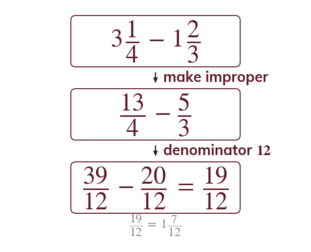
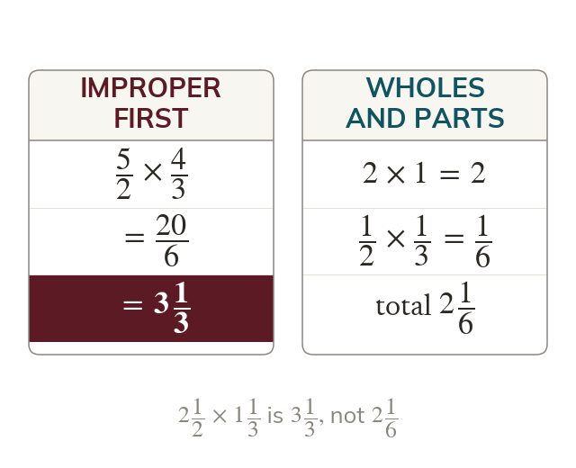
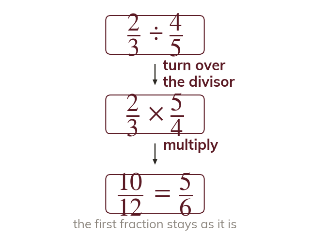
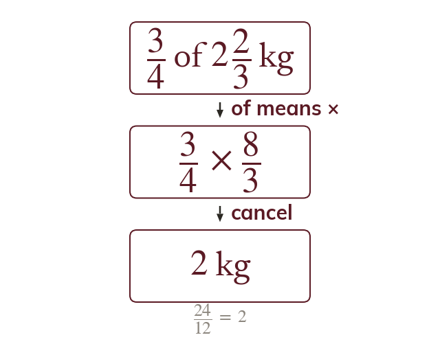
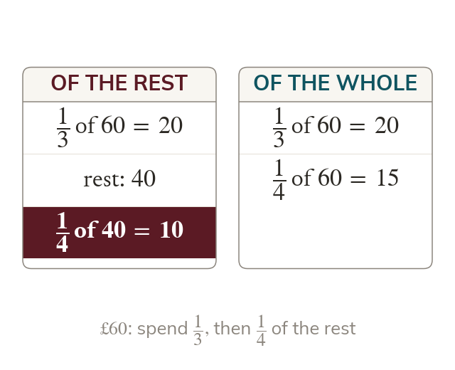
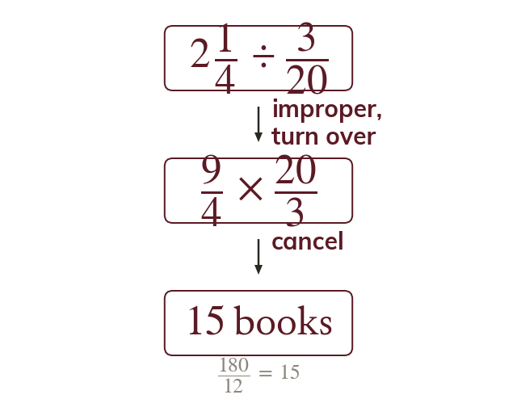

Adding needs equal-sized parts
Fractions add only over a common denominator. Improper fractions avoid borrowing.
Fractions add or subtract only when their denominators match. Making mixed numbers improper first avoids borrowing.
Recipes, plans and shares come in fractions, and an exact answer keeps them as fractions. Mixed numbers become improper fractions so that the fraction rules apply.
Work down the page at your own pace. Write every answer in your book first, then click to check it.
Read each card, then follow the worked examples one step at a time.

Fractions add only over a common denominator. Improper fractions avoid borrowing.

Mixed numbers become improper before multiplying. Wholes and parts multiplied separately go wrong.

Dividing by a fraction multiplies by its reciprocal. Only the divisor turns over.
Pick an answer. If it's wrong, the feedback tells you which mistake it was.
Read each card, then follow the worked examples one step at a time.

A fraction of a quantity is a multiplication. So of kg is kg.

A second fraction is often of what is left. The remainder comes first.

How many fit is a division. So m books on a m shelf is
Pick an answer. If it's wrong, the feedback tells you which mistake it was.
Finished? Next lesson: 10H.11.3 Percentage Problems in Context.
Log in, then search for a code to practise that skill.
Videos, worksheets and more on each part of this lesson.